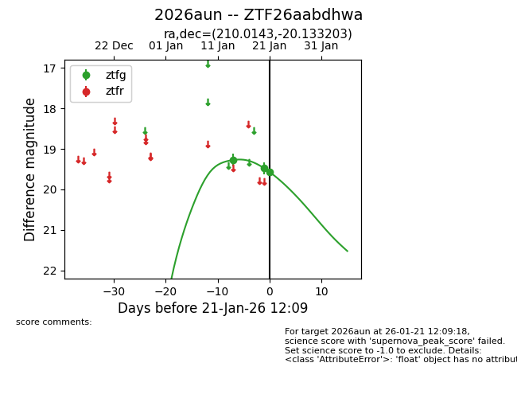
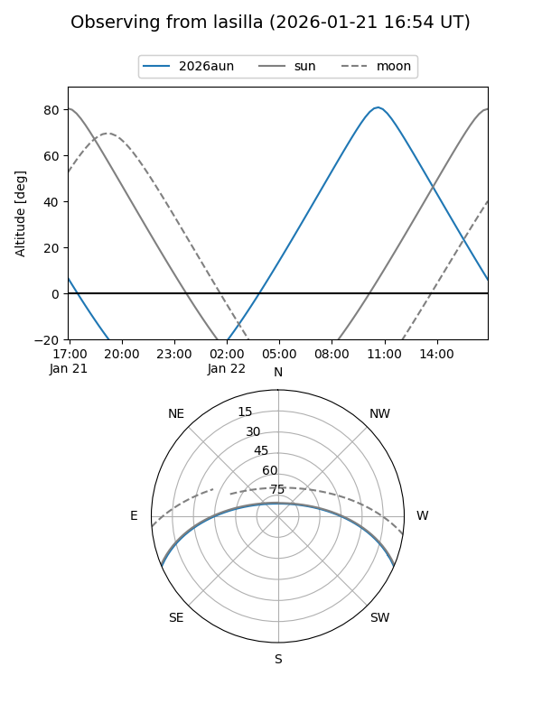
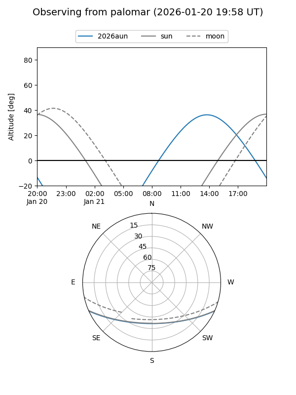
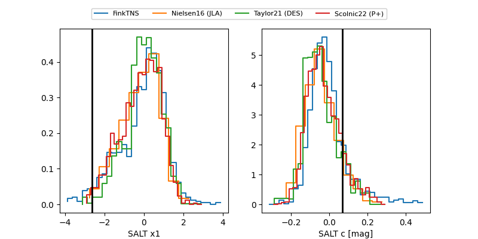

2026aun
Target 2026aun at 2026-01-21 12:11
Aliases and brokers:
FINK: link
Lasair: link
ALeRCE: link
TNS: link
YSE: link
alt names
ZTF26aabdhwa (ztf,fink_ztf)
2026aun (tns,yse)
Coordinates:
equatorial (ra, dec) = 210.0143,-20.13320
equatorial (HMS+DMS) = 14:00:03.42,-20:07:59.53
galactic (l, b) = (324.0930,+39.90220)
Flags:
Photometry:
last ztfg=19.57
3 ztfg detections
Lightcurve

Visibility


Additional plots
